Filtrar o dashboard de Finanças por período
No Dashboard de finanças (Início > Dashboard, aba Finanças), você consulta a situação financeira e filtra por período somente depois de abrir o detalhe de Fluxo de caixa ou de Contas a receber e a pagar. O filtro oferece do mês, até o mes ou do intervalo.
Os cards resumidos não têm esse seletor. Visão geral e Saldo atual de contas mostram a posição atual. O card Contas a receber e a pagar usa faixas fixas em relação a hoje.
Importante
- No Fluxo de caixa, um intervalo anterior à data atual não é mantido. O aviso Limite atingido informa que o período deve ser maior do que a data atual e que a data da consulta é ajustada.
- A data final do período precisa ser igual ou posterior à data inicial.
- As contas a pagar e a receber do período escolhido só aparecem quando a data inicial é informada.
Instruções
Filtrar o Fluxo de caixa
-
Acesse Início > Dashboard e selecione a aba Finanças.
-
No card Fluxo de caixa, clique em expandir detalhes.
-
Clique no período ao lado de atualizado agora. Na abertura, o rótulo é do mês.
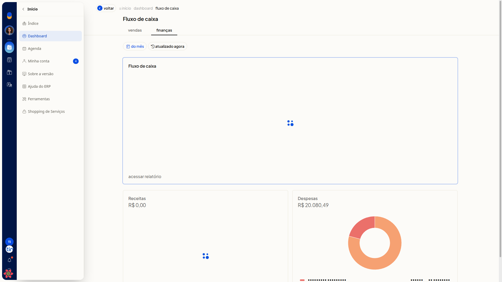
-
Escolha do mês, até o mes ou do intervalo.
-
do mês: o mês aparece no formato MM/AAAA.
-
até o mes: o mês aparece no formato MM/AAAA.
-
do intervalo: preencha De e Até no formato DD/MM/AAAA. Os campos não são obrigatórios.
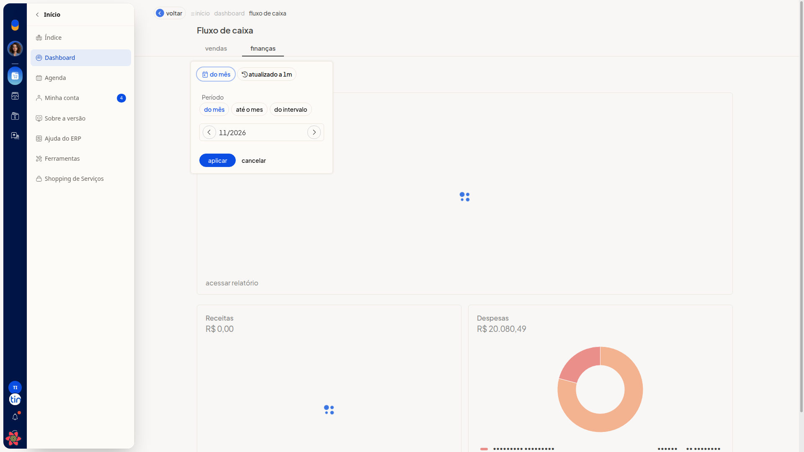
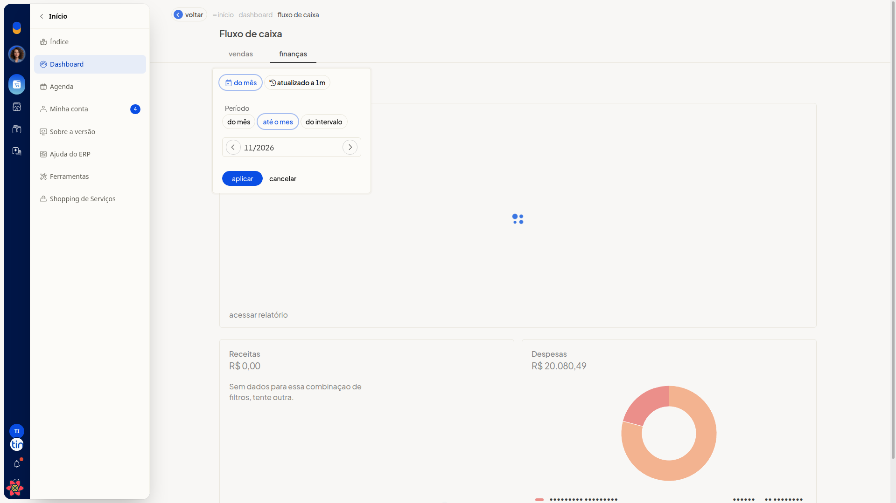
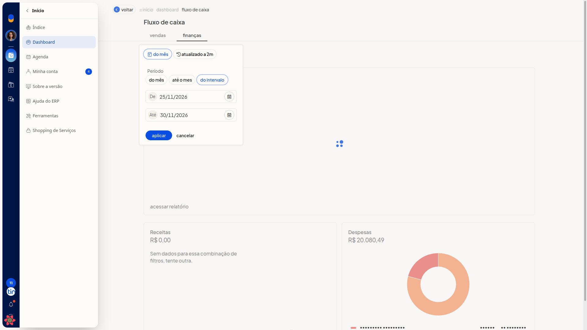
-
Clique em Aplicar. O gráfico de receitas e despesas é recalculado e o rótulo do período passa a mostrar a escolha. Um intervalo anterior à data atual exibe o aviso Limite atingido e a consulta é ajustada.
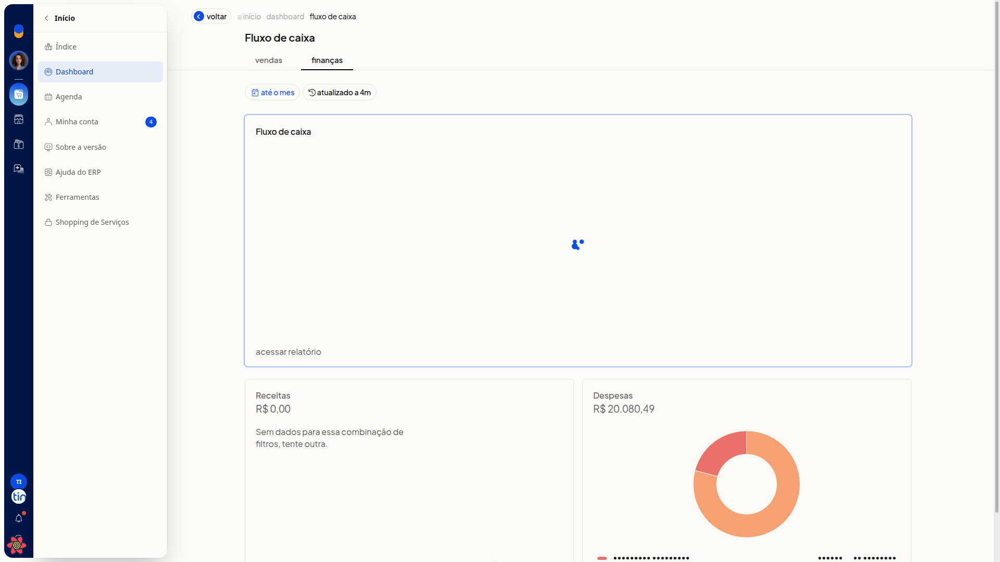
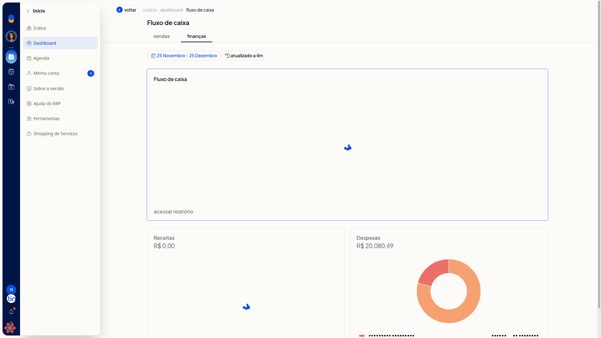
Filtrar Contas a receber e a pagar
-
Acesse Início > Dashboard e selecione a aba Finanças.
-
No card Contas a receber e a pagar, clique em expandir detalhes.
-
Clique no período ao lado de atualizado agora. Na abertura, o rótulo é do mês. Se não houver lançamentos, os totais aparecem zerados, com a mensagem Sem dados para essa combinação de filtros e os links acessar relatório.
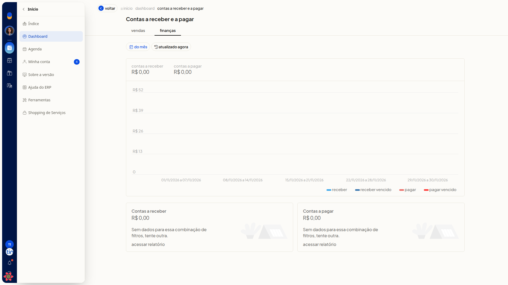
-
Escolha do mês, até o mes ou do intervalo.
-
do mês: o mês aparece no formato MM/AAAA.
-
até o mes: o mês aparece no formato MM/AAAA.
-
do intervalo: preencha De e Até no formato DD/MM/AAAA. Os campos não são obrigatórios.
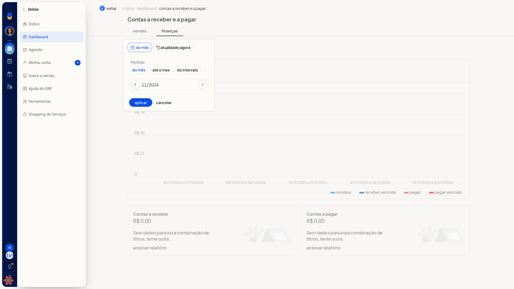
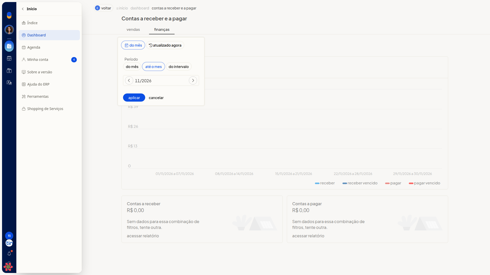
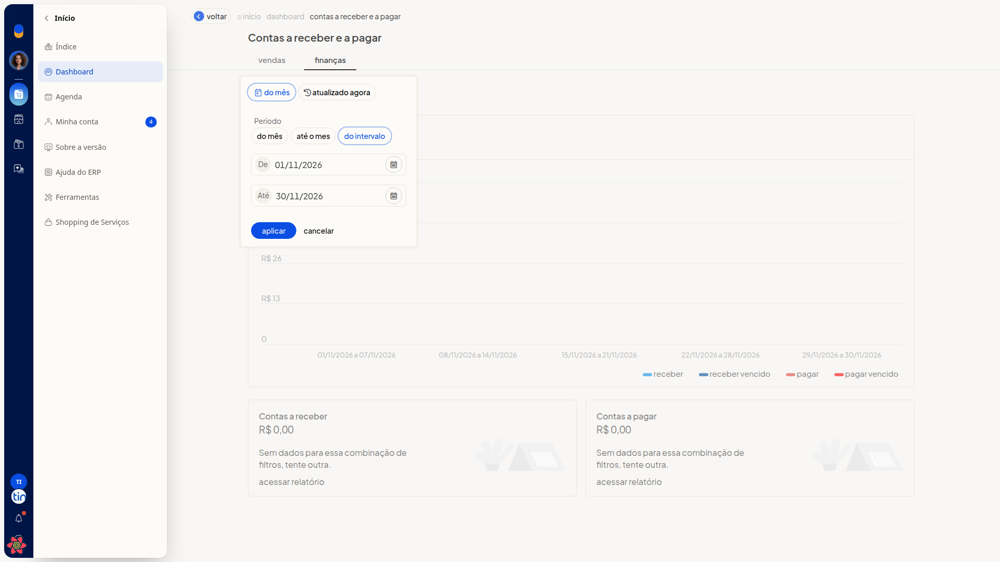
-
Clique em Aplicar. O gráfico e os totais de contas a receber e a pagar passam a refletir o período, e o rótulo ao lado de atualizado agora mostra a escolha.
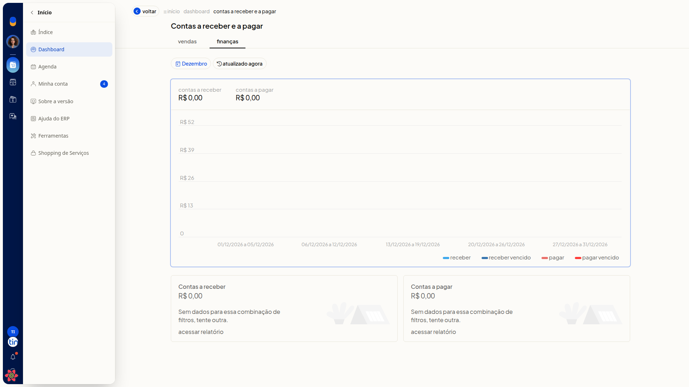
Resultado
O controle ao lado de atualizado agora mostra o período aplicado, como do mês, até o mes, o nome do mês ou o intervalo. O gráfico do detalhe é recalculado para esse período.
Informações adicionais
Os cards resumidos mostram a posição atual
Na Visão geral, você consulta Contas vencendo hoje e os totais atuais. Em Saldo atual de contas, você consulta o saldo atual e pode usar o link acessar caixa.
No card resumido Contas a receber e a pagar, as faixas são relativas a Hoje:
-
- 30 dias atrás
- 30 dias atrás
- 15 dias atrás
- 7 dias atrás
- Hoje
- 7 dias
- 15 dias
- 30 dias
-
- 30 dias
O filtro por mês ou intervalo só existe em expandir detalhes.
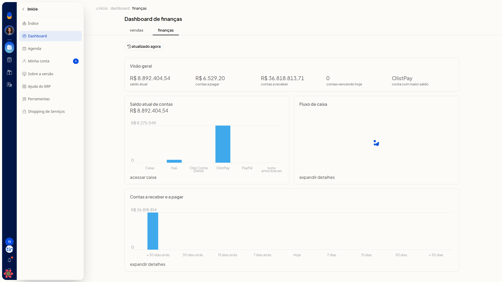
O último período do Fluxo de caixa permanece na mesma visita
Ao reabrir Fluxo de caixa na mesma visita, o último período aplicado continua selecionado.